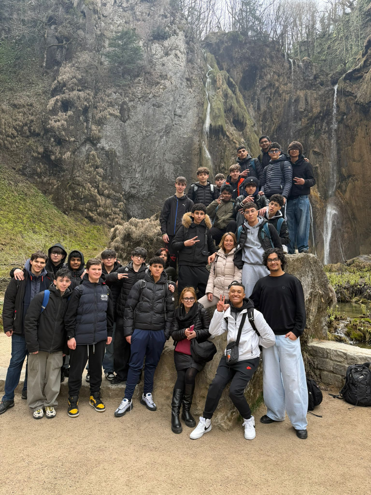

Perché visitare la Croazia?
La Croazia si trova nell'Europa sud-orientale ed è affacciata sul Mar Adriatico. È una meta perfetta per un viaggio di istruzione perché unisce storia, arte, natura e tradizioni in un contesto facilmente raggiungibile dall'Italia.
Durante il percorso si possono osservare paesaggi costieri mozzafiato, centri storici inseriti nel patrimonio UNESCO e luoghi legati alla cultura mediterranea.

Luoghi di interesse
- Zagabria — Capitale della Croazia, divisa tra una parte storica alta con i vicoli acciottolati e una parte bassa moderna piena di locali./li>
- Gorizia — famosa per il Palazzo di Diocleziano, sede dell'imperatore romano
- Postumia — Grotte di Postumia: Spettacolari grotte sotterranee in Slovenia che si girano in parte a bordo di un trenino elettrico.
- Laghi di Plitvice — È il parco nazionale più famoso della Croazia. È un insieme di 16 laghi specchiati digradanti, collegati tra loro da decine di cascate spettacolari. Si gira a piedi camminando su passerelle di legno sospese sospese su acque color turchese e smeraldo. Un vero paradiso naturale.
Informazioni pratiche
| Informazione | Dettaglio |
|---|---|
| Capitale | Zagabria |
| Moneta | Euro (€) — dal 2023 |
| Lingua | Croato; diffuso anche l'italiano in Dalmazia |
| Fuso orario | CET (UTC+1), come l'Italia |
| Documento richiesto | Carta d'identità valida (UE) |
| Clima (estate) | Caldo e soleggiato, 28–35°C |
Curiosità culturali
- La cravatta fu inventata dai soldati croati nel XVII secolo.
- Dubrovnik è stata set di riprese per la serie Il Trono di Spade.
- La Dalmazia dà il nome al celebre mantello a pois della razza omonima.
- Il giocattolo Rimmel (la trottola) ha origini croate.